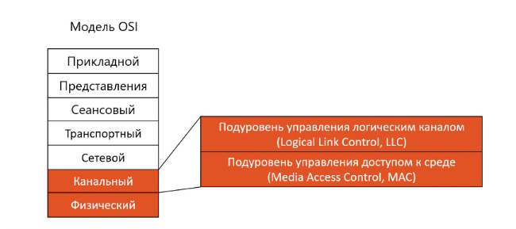
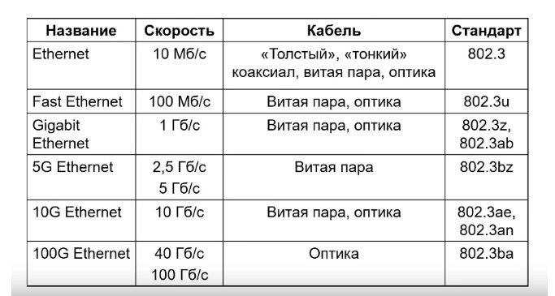
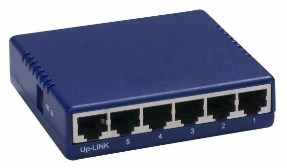
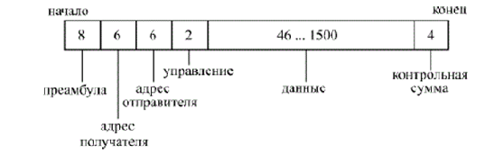
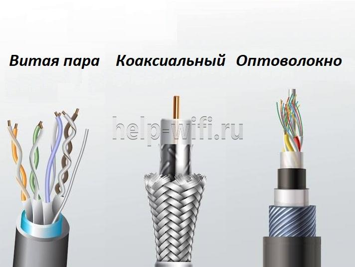
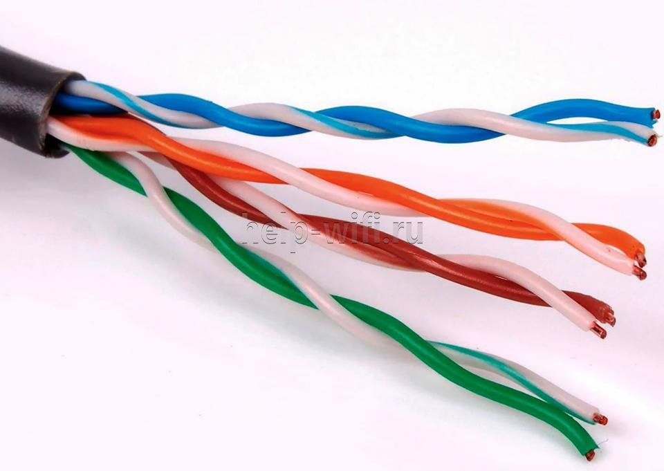
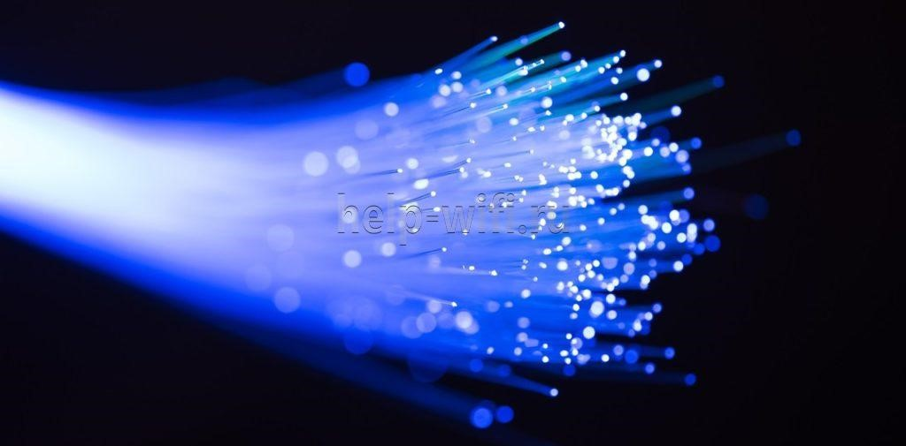
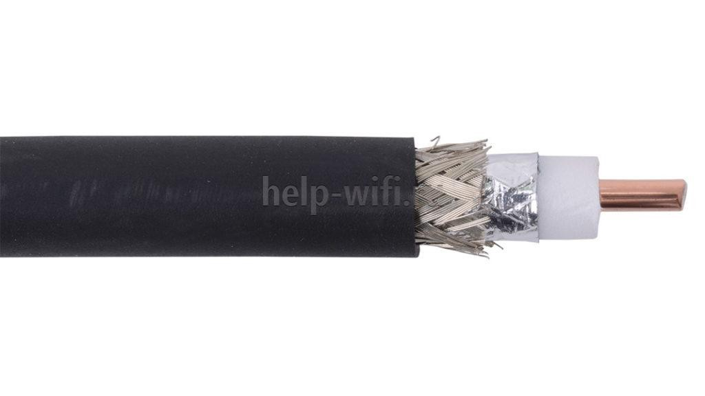
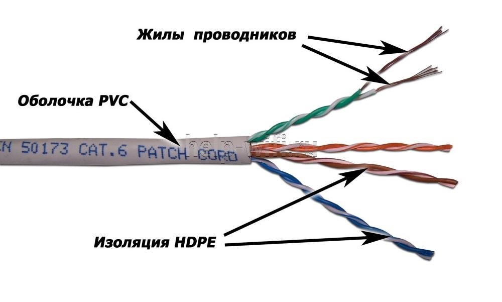

История Технологии Ethernet
Ethernet — это самая популярная технология для создания проводных компьютерных сетей на настоящее время. Совместно с технологией Wi-Fi Ethernet используется для создания современных компьютерных сетей. В модели взаимодействия открытых систем OSI Ethernet находится на физическом и канальном уровне. Причём на канальном уровне используются оба подуровня LLC и МАС.
Технологию Ethernet в 1973 году придумал Роберт Метклаф, тогда он работал в
компании Xerox. В качестве основы своей идеи он использовал сеть Aloha Гавайского университета в
которую данные передавались в беспроводной среде через радиоэфир. Свою сеть Робер назвал
Ethernet
сокращение от The Ether Network (Эфирная сеть). Только в качестве эфира использовался не
радиоэфир,
как в сети Aloha, а провода. Роберт назвал это A Cable-Three Ether (кабельный эфир).
Технология оказалась работоспособной и 3 компании Xerox, Dec и Intel решают использовать сеть
Ethernet в качестве стандартного сетевого решения, для всего оборудования этих компаний. Ранее
каждая компания производила свое оборудование которое было несовместимо друг с другом. Ethernet
стал
индустриальным стандартом, который стали использовать все три крупные компании.
В 1932 году создали проект IEEE 802.3 для того чтобы принять уже не индустриальный, а
юридический
стандарт для технологии Ethernet и в конце 90 годов Ethernet стал самой популярной технологией
для
создания локальных сетей и вытеснил все остальные существующие до того времени технологии.
Виды Ethernet
Есть большое количество вариантов технологий Ethernet, самый первый Ethernet имел скорость 10 Мбит/с данные можно было передавать по кабелям 3-х типов коаксиальный кабель, витая пара и по оптическому кабелю. Стандарт, который описывал этот вариант технологий Ethernet назывался IEEE 802.3.
Второй вариант Ethernet называется Быстрый Ethernet, здесь скорость увеличена в
10 раз. Для передачи данных можно использовать два вида кабелей медный кабель витая пара и оптику. В
следующих вариантах скорость увеличивается всё больше, смотри в таблице. Варианты технологий 10 и
100 Гб/с подходят для серверов, а 2.5 и 5 Гб/с для создания локальных сетей, где 10 и 100 Гб/с это
излишняя скорость, а оборудование работающее на такой скорости слишком дорогое.
Под названием Ethernet скрываются две совершенно разные технологии:
- Классический Ethernet
Использует разделяемую среду для передачи данных, данные которые передаются по этой технологии доступны всем компьютерам, которые подключены в сети. Этот вариант технологий использовался с первого варианта Ethernet и до Гигабит Ethernet. - Коммутируемый Ethernet
Использует соединение “Точка-Точка”. Коммутируемый Ethernet появился во втором варианте Fast Ethernet и начиная с технологий 10G и выше, это единственный и доступный вариант технологий.
Классический Ethernet
Исторически появился самым первым, в первом варианте Ethernet использовалась топология “общая
шина”.
Вдоль всех компьютеров шел коаксиальный кабель, который соединял все компьютеры
между собой.
Компьютеры подключались к этому коаксиальному кабелю с помощью Т-коннекторов, к которым с двух
сторон подключались разные участки коаксиального кабеля, соединяющего компьютер с двумя
соседними.
Такие сети не были удобны в эксплуатации, если где-то происходил разрыв кабеля или повреждение
адаптера, то сразу переставала работать вся сеть. И найти место, где конкретно произошла
проблема
было очень сложно, поэтому со временем появился второй вариант технологии Ethernet на основе
устройств — концентратор.
Концентратор (HUB)
Физическая топология в такой сети звезда, все компьютеры подключаются к одному концентратору, но логическая топология общая шина. Так как сигнал, который поступает на один порт концентратора передается на все остальные порты. Преимущества концентратора в том, что если выйдет из строя кабель или сетевой адаптер, то перестает работать сеть всего лишь на одном компьютере. А также то, что найти неисправность достаточно легко, за счёт цветовой индикации на портах концентратора.
Уровни OSI
Технология Ethernet включает физический и канальный уровни модели взаимодействия открытых систем OSI. На физическом уровне технология Ethernet содержит описание передачи сигналов по трём типам кабелей коаксиал, медный кабель и оптоволокно.
На канальном уровне содержится методы доступа и протоколы, эти методы и доступы
работают одинаково независимо от того какой кабель используется для передачи данных, медный или
оптический.
На канальном уровне для передачи данных используются кадры. В Ethernet есть четыре формата кадров:
- Ethernet II
- Novell raw IEEE 802.3
- IEEE 802.2 LLC
- IEEE 802.2 SNAP
Структура Кадра
- Преамбула состоит из 8 байт, первые семь из которых представляют собой код 10101010, а последний восьмой — код 10101011. В стандарте IEEE 802.3 этот последний байт называется признаком начала кадра (SFD - Start of Frame Delimiter) и образует отдельное поле пакета.
- Адрес получателя (приемника) и адрес отправителя (передатчика) включают по 6 байт.. Эти адресные поля обрабатываются аппаратурой абонентов.
- Поле управления (L/T - Length/Type) содержит информацию о длине поля данных. Оно может также определять тип используемого протокола. Принято считать, что если значение этого поля не больше 1500, то оно определяет длину поля данных. Если же его значение больше 1500, то оно определяет тип кадра. Поле управления обрабатывается программно.
- Поле данных должно включать в себя от 46 до 1500 байт данных. Если пакет должен содержать менее 46 байт данных, то поле данных дополняется байтами заполнения. Согласно стандарту IEEE 802.3, в структуре пакета выделяется специальное поле заполнения (pad data - незначащие данные), которое может иметь нулевую длину, когда данных достаточно (больше 46 байт).
- Поле контрольной суммы (FCS — Frame Check Sequence) содержит 32-разрядную циклическую контрольную сумму пакета (CRC) и служит для проверки правильности передачи пакета.
Таким образом, минимальная длина кадра (пакета без преамбулы) составляет 64 байта (512 бит).
Кабель Ethernet
Виды кабелей
Существует три вида кабеля для Интернета: коаксиальный, оптоволокно и витая пара.
Витая пара
Этот сетевой кабель – подходящее решение при проведении локальных сетей. Он состоит из двух или четырех скрученных между собой пар проводов. Каждые два провода, соединенные попарно, задействованы лишь для отправки или для приема сигнала.
Принцип работы витой пары – соединить два узла и использовать разделенные
среды, чтобы передавать данные в разных направлениях.
Витая пара объединяет в одну сеть технику на удалении до 100 метров. Ввиду ее низкой цены и
простоты в использовании именно ее все чаще выбирают для формирования локальных
вычислительных сетей (ЛВС) и проведения Интернета в помещении.
Оптоволокно
Оптоволокно – это наиболее быстрый способ передачи информации на сегодня.
- высокая пропускная способность;
- долгий срок службы;
- быстрое определение несанкционированного подключения, что делает сеть более безопасной;
- высокое шумоподавление, хорошая защита от помех;
- быстрая передача данных.
Оптоволоконные сетевые провода используют метод передачи световых лучей с
применением полного внутреннего отражения. Важное преимущество такого кабеля для подключения
к Интернету – это отсутствие ограничений на протяженность магистрали. Именно поэтому он
может соединять существенно удаленные объекты.
Само оптоволокно стоит недорого, но оборудование для него имеет очень высокую цену.
Коаксиальный
Этот вид применяется в охранной сигнализации, видеонаблюдении и телевидении. Принцип его работы – трансляция радиочастотных электрических сигналов, при этом сила сигнала тесно связана с длиной магистрали и дистанцией, на которую он будет отправлен.
Сегодня коаксиальная кабельная продукция все чаще вытесняется витой парой. Последняя дешевле, прокладывать с ее помощью сети проще и быстрее.
Оптимальный кабель для Интернета – витая пара или Ethernet-кабель (так его часто называют из-за одноименного штекера на конце и разъема в технике, куда подключается провод). Именно он позволяет настроить локальную сеть между несколькими устройствами, соединить принтер с компьютером, провести Интернет от поставщика к модему или маршрутизатору.
Такой провод сформирован из двух или четырех пар медных проводников (четырехжильный и
восьмижильный).
Внутри каждого проводника есть одна медная жила диаметром 0,4-0,6 мм или множество мелких жил.
Первая легче в обжиме и применяется для подключения интернет-розеток. Вторая гибче и
предназначена для соединения между собой ПК и прочей техники.
Вывод по теории
Ethernet — это сетевая технология, которая соединяет устройства в локальной
или глобальной сети.
Он
может
появиться в самых разных местах, от домов до корпоративных офисов и больниц. Где в одной сети есть
несколько устройств, которые хотят общаться друг с другом.
Он обеспечивает надёжное и стабильное соединение, в отличие от беспроводной технологии. Которая
подвержена помехам и может быть нестабильной в зависимости от вашего расстояния до маршрутизатора.
Главный недостаток заключается в том, что он предназначен для сетей с устройствами, подключёнными на
небольшом расстоянии. Для компании было бы непрактично использовать его для подключения устройств,
которые находятся далеко за пределами их офисов, например, на парковке, потому что вам нужно будет
проложить физический кабель к устройствам, которые вы хотите подключить к сети. Скорость соединения
Ethernet зависит от того, сколько трафика проходит по сети. Многие люди, использующие одну и ту же
сеть
одновременно, могут снизить скорость. Сегодня эта технология не актуальна для многих современных
устройств, поддерживающих только беспроводную технологию.